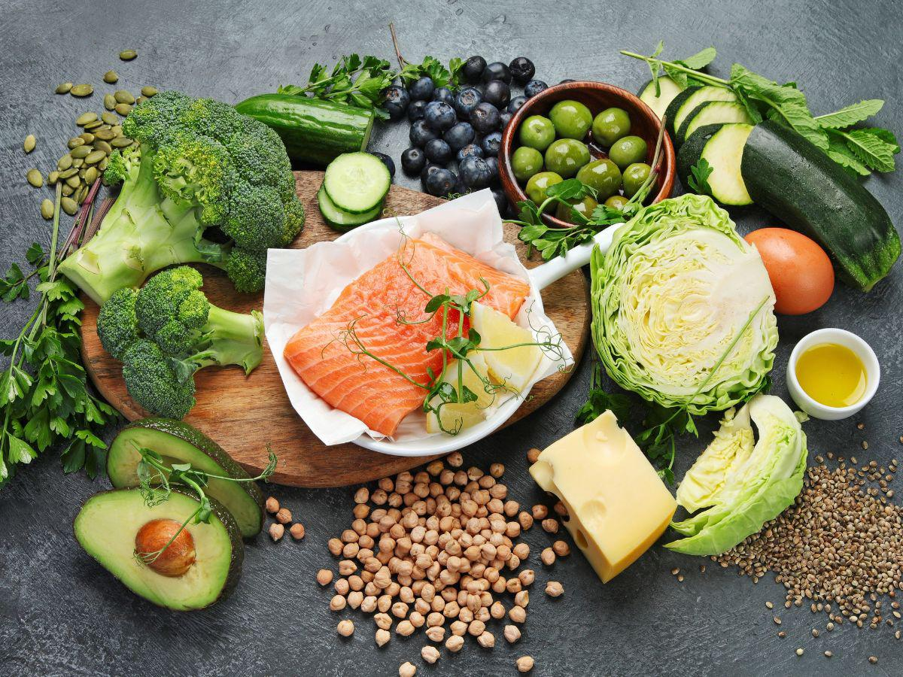
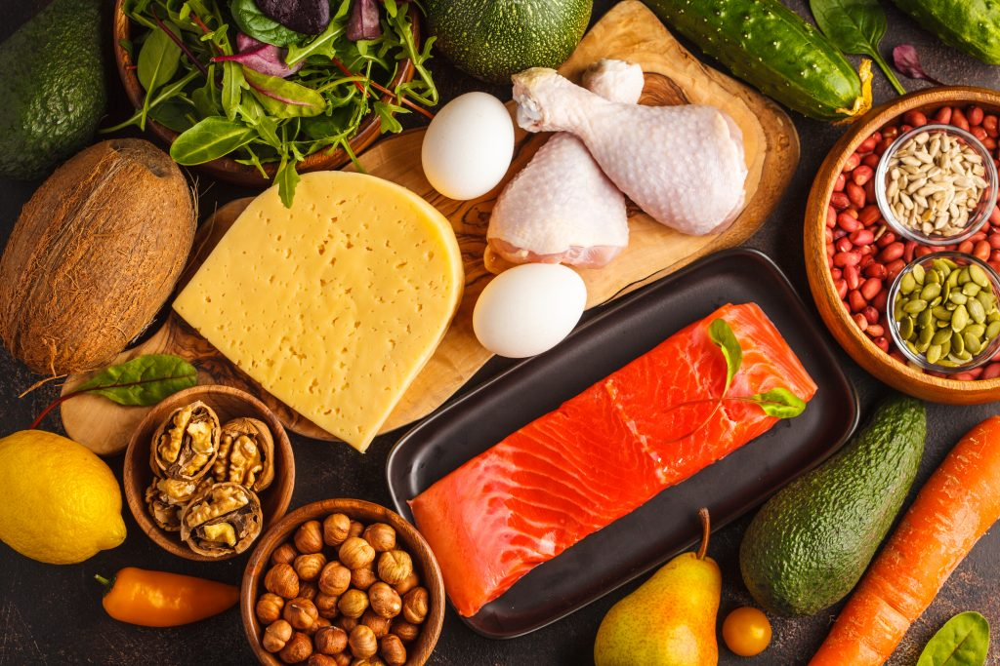

Alimentação Saudável - Dietas
Dieta Mediterrânea

A dieta mediterrânea é um tipo de alimentação saudável que prioriza o consumo de alimentos frescos e naturais, baseando-se nos sabores e tradições da região mediterrânea, o que traz benefícios para a saúde de uma forma geral, além de diminuir o risco de doenças cardiovasculares, câncer, diabetes e doenças degenerativas.
Dieta Dash
A dieta DASH é um plano de alimentação que tem como objetivo principal ajudar a controlar a hipertensão arterial e prioriza o consumo de vegetais, frutas, cereais integrais e produtos lácteos baixos em gordura, que são fontes de potássio, magnésio, cálcio e fibras, que promovem a diminuição da pressão arterial.
Dieta Low Carb
A dieta low carb é um estilo de alimentação onde se diminui a ingestão de alimentos ricos em carboidratos, como pão, macarrão e tapioca, e se aumenta o consumo de proteínas e gorduras de boa qualidade provenientes do azeite, nozes e abacate, por exemplo.